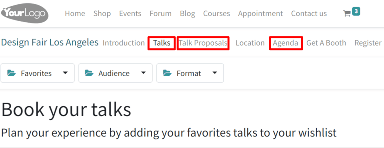
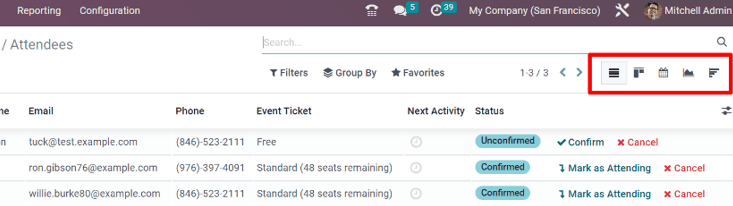
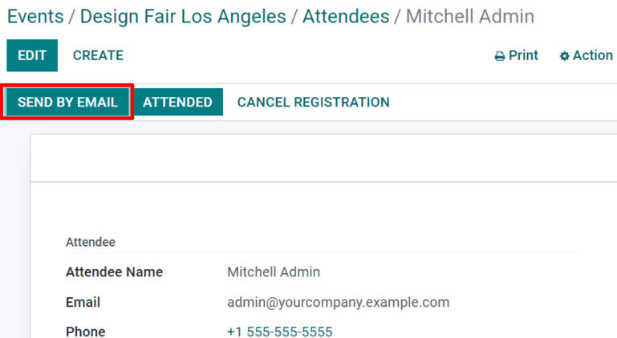
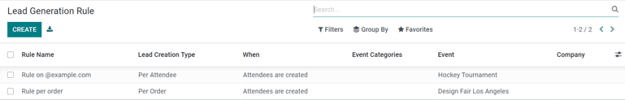

Seguimiento y gestión de las pláticas¶
Gracias a la aplicación Eventos de Odoo, podrá permitir que sus asistentes propongan ponentes para los eventos.
Configuración¶
Vaya a y habilite Horario y sesiones.
Si activa esta función, aparecerán otras dos opciones: Transmisión en vivo y Ludificación del evento.
Transmisión en vivo permite la emisión de sesiones en línea gracias a su integración con YouTube.
Ludificación del evento permite compartir un cuestionario con sus asistentes, una vez finalizada una sesión (plática).
Truco
Ludificación del evento no es necesaria para que las sesiones aparezcan en la página del evento en el sitio web, pero puede mejorar la participación y la experiencia general de los asistentes.
Pláticas, propuestas de pláticas y agenda¶
Una vez activadas estas dos funciones, se añadirán automáticamente los siguientes enlaces al menú situado en la página del evento del sitio web: Pláticas, Propuestas de pláticas, y Agenda. Cualquier asistente puede acceder libremente a estos elementos del menú y a su contenido.
El enlace Pláticas dirige al asistente a una página con todas las pláticas de ese evento.
Mientras que el enlace Propuestas de pláticas dirige a los asistentes a un formulario en el que pueden proponer pláticas para el evento.
El enlace Agenda dirige al asistente a una página con todas las pláticas del evento, pero en formato de calendario/horario.
Gestión de las propuestas de pláticas¶
Cuando los asistentes completen y envíen un formulario de propuesta de plática en el sitio web, se creará inmediatamente una nueva Propuesta en el backend del evento.
Nota
Todas las pláticas (Propuestas, Confirmadas, Anunciadas, etc.) están disponibles a través del botón inteligente Sesiones del formulario del evento.

Si se acepta una propuesta, mueva la etiqueta Sesión de evento a la fase adecuada en la vista kanban (por ejemplo, confirmada, etc.). A continuación, vaya al formulario de plantilla de ese evento en particular y haga clic en el botón inteligente Ir al sitio web para acceder a la página de esa plática específica en el sitio web.
Para hacer que una plática esté disponible vaya a la esquina superior derecha y cambie el estado de Sin publicar a Publicado.
Nota
Recuerde que si no publica una plática, nadie podrá verla.

Lista de asistentes y asistencia¶
Una vez que los asistentes se registren en un evento específico, serán parte de la lista de asistencia del evento. Si desea ver la lista haga clic en el botón inteligente guilabel:asistentes disponible en el formulario del evento o en .
Nota
Cuando un asistente llegue al evento, se va a confirmar su asistencia y su estado cambiará a Asistió.

Si desea analizar la lista de asistentes Odoo ofrece varias maneras de visualizar la información. Cada vista es diferente, aunque presenta la misma información; si desea cambiar el tipo de vista haga clic en los iconos ubicados en la esquina superior derecha.
La vista kanban muestra si los asistentes ya pagaron su boleto o sigue pendiente.
La vista de lista muestra la información en forma de lista.
La vista de calendario proporciona una visualización clara del calendario de la cantidad de asistentes en cada evento, para cada fecha.
La vista de gráfico muestra los asistentes de cada evento, a su vez ofrece varios filtros y medidas personalizables para obtener un mejor análisis.
La vista cohorte muestra los datos de los asistentes para analizar de mejor manera el número de fechas de registro.
Nota
Si vende los boletos mediante órdenes de venta, se validarán los asistentes en cuanto se confirme la cotización.
Gestión de registros¶
Si selecciona un asistente, Odoo le mostrará el formulario con más información de ese asistente específico.
Desde aquí se pueden enviar las insignias del evento de forma manual, solo debe seleccionar Enviar por correo electrónico. También se puede establecer el estado del asistente comó asistió, o puede cancelar el registro mediante el botón Cancelar registro.
Reglas de generación de leads¶
Con Odoo, puede generar leads a partir de eventos.
Para crear y configurar una regla de generación de leads que se relacione con eventos, vaya a la aplicación .
En la página de reglas de generación de leads puede ver todas las reglas configuradas, junto con todos los datos relacionados con dichas reglas.
Para crear una nueva regla de generación de leads, haga clic en crear y complete el formulario de la regla de generación de leads.

Después de agregar el nombre de la regla, configure cómo se deberían crear los leads (puede ser por asistente o por orden), y cuándo se deberían crear (cuando se crean los asistentes, cuando se confirman, o cuando asistieron al evento).
En la sección para cualquiera de estos eventos hay campos para agregar esta regla a cualquier categoría de evento, empresa y/o evento en específico. Para hacer que esta regla sea aún más específica, puede configurar una regla de filtro de dominio para garantizar que la regla solo se aplique a un público objetivo de asistentes en específico (puede hacerlo en la sección si los asistentes cumplen con las siguientes condiciones).
Por último, en la sección valores predeterminados de leads elija un tipo de lead, asígnelo a un equipo de ventas (y/o a un vendedor) y agregue etiquetas a la regla si es necesario.